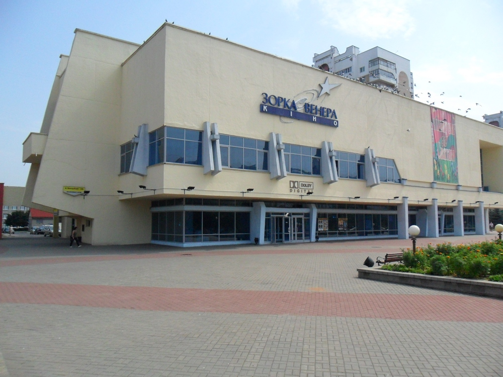

Культура в Солигорске

Для проведения досуга к услугам горожан городской дворец культуры, ДК «Строителей», Центр культуры и досуга, сеть библиотек, широкоформатный кинотеатр «Зорка Венера» на 806 мест. Имеется ряд любительских объединений — клубы молодых поэтов и авторской песни. Также город упомянут в песне «Геологическая».
Музеи:
Государственное учреждение культуры «Солигорский краеведческий музей»
Музей матери в Центре творчества детей и молодёжи
Музей Трудовой славы ОАО «Беларуськалий»
Народный музей пионерской организации и современного детского движения
Музея спорта государственного учреждения образования «Средняя школа №8 г. Солигорска»
Музей под открытым небом. Экспозиция милицейских ретро-автомобилей
Вернуться наверх